Mobarakol Islam
Senior Research Fellow |
|


Short-Bio
I am a senior research fellow at the Department of Medical Physics and Biomedical Engineering, University College London, working with Dr. Matt Clarkson in WEISS. Before that, I was a postdoctoral research associate at the Department of Computing, Imperial College London, under the supervision of Dr. Ben Glocker in BioMedIA Lab. I received my PhD degree from NUS Graduate School for Integrative Sciences and Engineering Programme (ISEP), National University of Singapore.
My research focuses on enhancing deep neural network robustness, fairness, and reliability using calibration, uncertainty, and causality to improve image-guided disease diagnosis and intervention. Overall, my research cover the medical imaging and video sources of MRI, CT, X-ray, Ultrasound, Endoscope, and Microscope and non-imaging data sources of DNA, Genomic, Radiomic, and clinical information.
News
- [02/2023] A paper got acceptance at IJCARS (International Journal of Computer Assisted Radiology and Surgery).
- [01/2023] Three papers got acceptance: two at ICRA2023 and one at IPCAI2023.
- [12/2022] A paper got acceptance at IEEE Transactions on Automation Science and Engineering (IEEE T-ASE).
- [09/2022] A paper got acceptance at ECCV2022 Medical Computer Vision Workshop.
- [08/2022] Started new role as senior research fellow at WEISS at University College London, UK.
- [07/2022] A paper got acceptance at ACM Multimedia 2022 Medical Computer Vision Workshop.
- [06/2022] 4 papers got acceptance at MICCAI 2022.
- [01/2022] A paper on 'Global-Reasoned Multi-Task Learning' is accepted in both RA-L and IEEE ICRA & RA-L 2022.
- [07/2021] Presenting our paper Class-Distribution-Aware LS TS in ICML UDL 2021 workshop.
- [06/2021] A paper on Class-Incremental Domain Adaptation for Surgical Report Generation has been accepted in MICCAI 2021 .
- [03/2021] A paper on Glioblastoma Multiforme Prognosis has accepted in Computerized Medical Imaging and Graphics .
- [02/2021] A paper on Model Calibration for Surgical Report Generation has accepted in ICRA 2021 .
- [02/2021] A paper on Capturing Uncertainty in Medical Image Segmentation has accepted in IPMI 2021 .
- [10/2020] Presenting my paper at MICCAI 2020 .
- [06/2020] Paper on Graph Structure Representation in Robotic Surgery is accepted in MICCAI 2020.
- [06/2020] Presenting my paper at ICRA2020 .
- [05/2020] Paper on "Spatio-temporal MTL model of predicting saliency while tracking surgical instrument" is accepted in the journal of Medical Image Analysis .
- [02/2020] Started my postdoc journey in BioMedIA at Imperial College London, UK.
- [01/2020] Paper on Attention Pruned Multitask Learning Model is accepted in ICRA 2020.
- [10/2019] Oral presentation of our paper at MICCAI 2019.
- [06/2019] Paper on MTL model of saliency and segmentation is accepted in MICCAI 2019.
- [06/2019] Paper on Surgical Instrument Segmentation is accepted in IEEE RA-L.
Selected Publications [Google Scholar]
(* Co-first auhtor; † indicates corresponding authorship)| 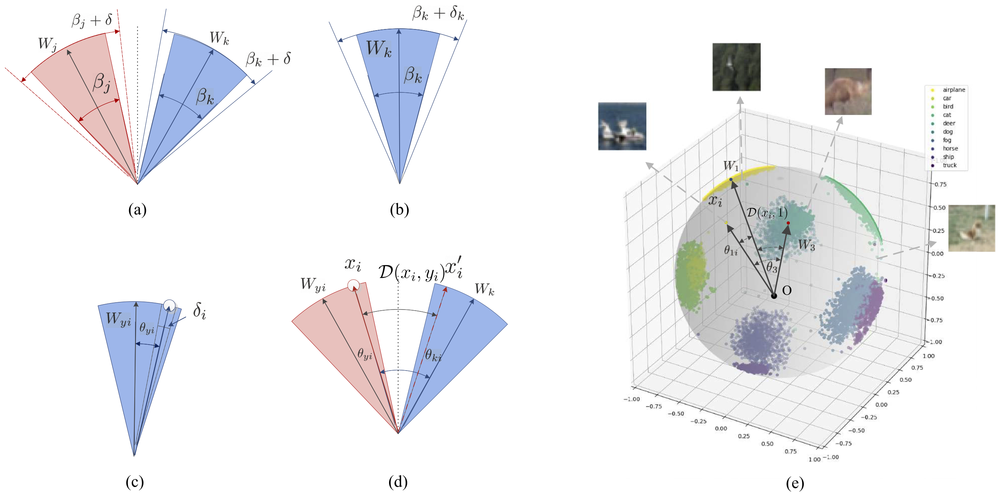 | Angular Gap: Reducing the Uncertainty of Image Difficulty through Model Calibration. Bohua Peng, Mobarakol Islam†, Mei Tu. The 30th ACM International Conference on Multimedia (ACM Multimedia), 2022. |
| 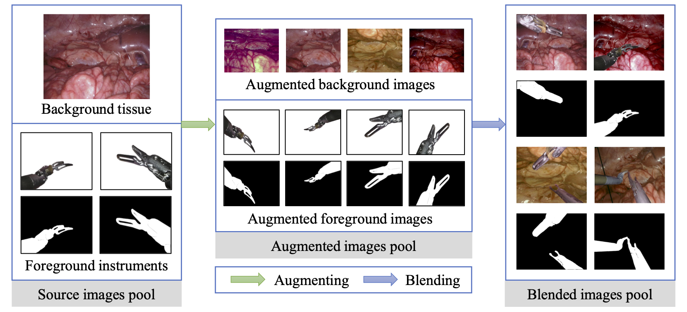 | Rethinking Surgical Instrument Segmentation: A Background Image Can Be All You Need. An Wang*, Mobarakol Islam*, Mengya Xu, , and Hongliang Ren. Medical Image Computing and Computer-Assisted Intervention (MICCAI), 2022. |
| 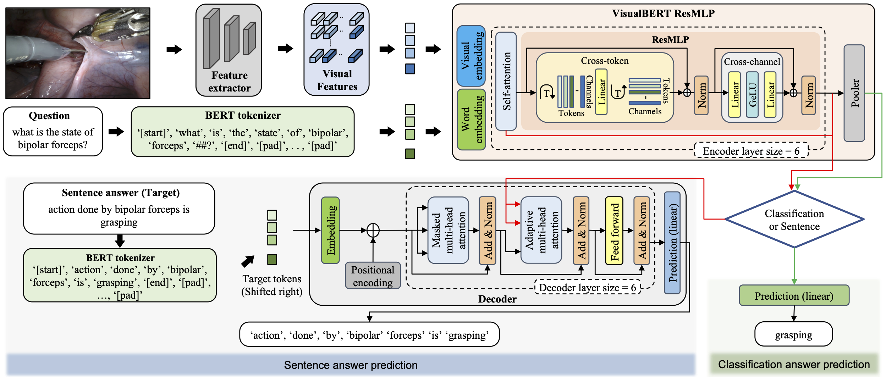 | Surgical-VQA: Visual Question Answering in Surgical Scenes Using Transformer. Lalithkumar Seenivasan*, Mobarakol Islam*, Adithya K. Krishna, and Hongliang Ren. Medical Image Computing and Computer-Assisted Intervention (MICCAI), 2022. |
| 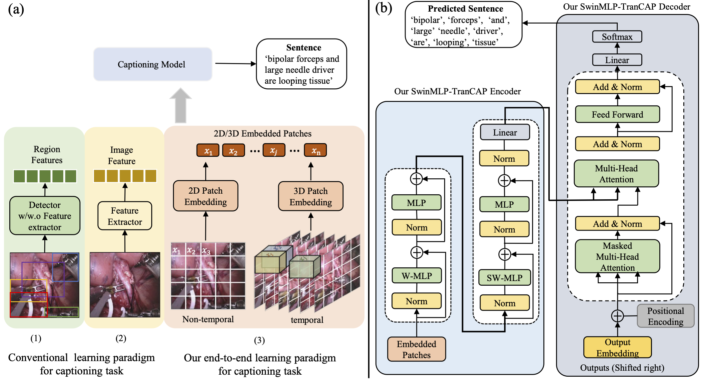 | Rethinking Surgical Captioning: End-to-End Window-Based MLP Transformer Using Patches. Mengya Xu*, Mobarakol Islam*, Hongliang Ren. Medical Image Computing and Computer-Assisted Intervention (MICCAI), 2022. |

|
Estimating Model Performance under Domain Shifts with Class-Specific Confidence Scores. Zeju Li, Konstantinos Kamnitsas, Mobarakol Islam, Chen Chen, Ben Glocker. Medical Image Computing and Computer-Assisted Intervention (MICCAI), 2022. |
| 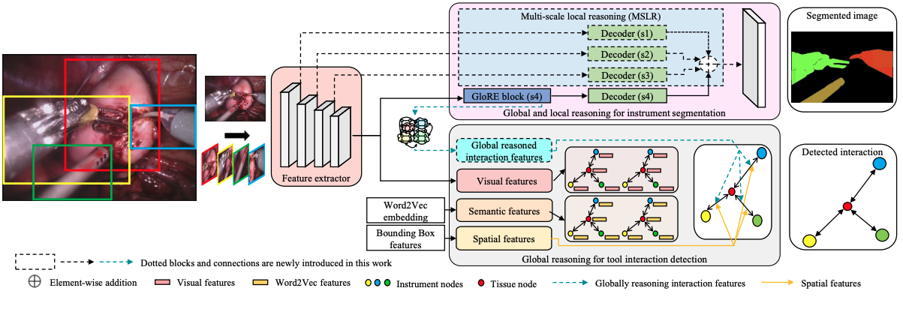 | Global-Reasoned Multi-Task Learning Model for Surgical Scene Understanding. Lalithkumar Seenivasan, Sai Mitheran, Mobarakol Islam, Hongliang Ren. IEEE International Conference on Robotics and Automation (ICRA & RA-L), 2022. |
| 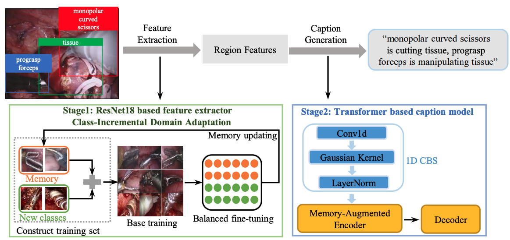 | Class-Incremental Domain Adaptation with Smoothing and Calibration for Surgical Report Generation. Mengya Xu*, Mobarakol Islam*, Chwee Ming Lim, Hongliang Ren. Medical Image Computing and Computer-Assisted Intervention (MICCAI), 2021. |
| 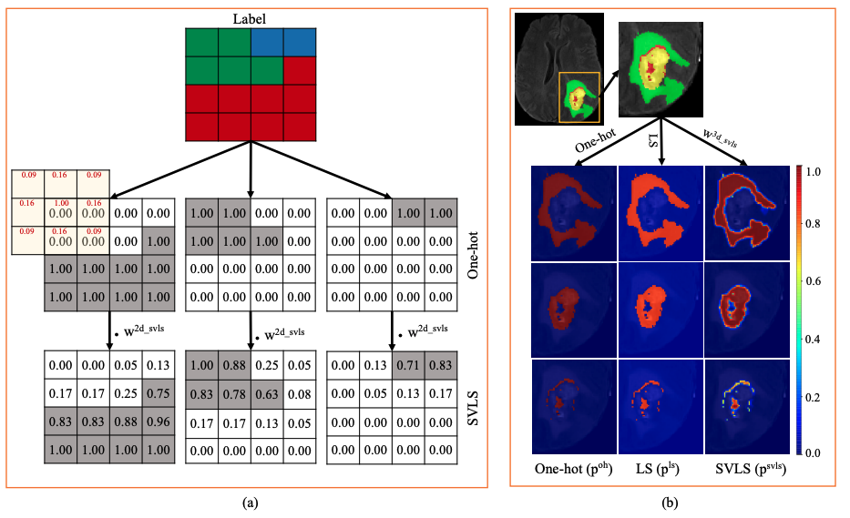 | Spatially Varying Label Smoothing: Capturing Uncertainty from Expert Annotations. Mobarakol Islam†, Ben Glocker. International Conference on Information Processing in Medical Imaging (IPMI), 2021. |

|
Learning domain adaptation with model calibration for surgical report generation in robotic surgery. Mengya Xu*, Mobarakol Islam*, Chwee Ming Lim, Hongliang Ren. IEEE International Conference on Robotics and Automation (ICRA), 2021. |
| 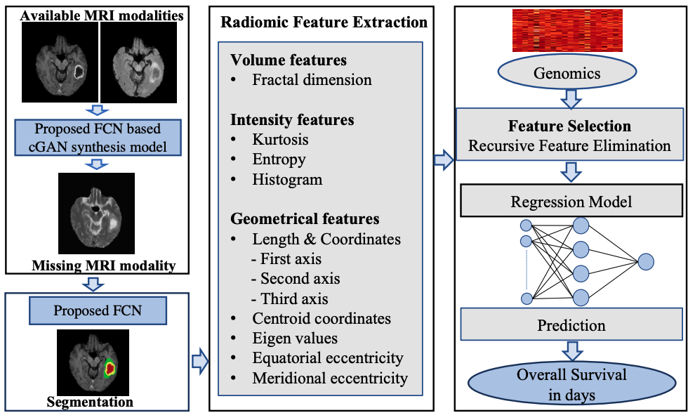 | Glioblastoma multiforme prognosis: Mri missing modality generation, segmentation and radiogenomic survival prediction. Mobarakol Islam, Navodini Wijethilake, Hongliang Ren. Computerized Medical Imaging and Graphics, 2021. |
| 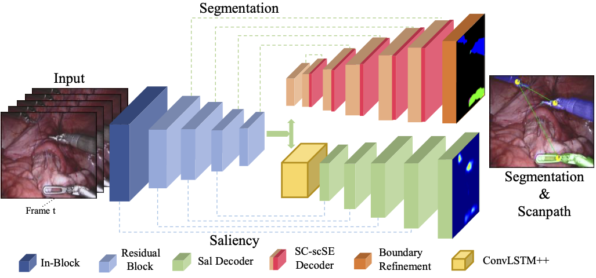 | ST-MTL: Spatio-Temporal multitask learning model to predict scanpath while tracking instruments in robotic surgery. Mobarakol Islam, VS Vibashan, Chwee Ming Lim, Hongliang Ren. Medical Image Analysis (MedIA), 2021. |
| 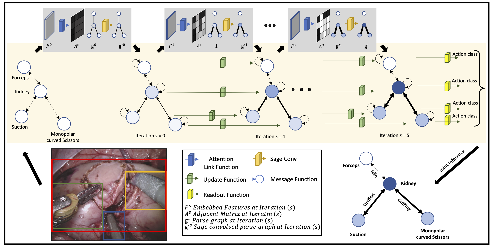 | Learning and Reasoning with the Graph Structure Representation in Robotic Surgery. Mobarakol Islam, Lalithkumar Seenivasan, Lim Chwee Ming, Hongliang Ren. Medical Image Computing and Computer Assisted Intervention (MICCAI), 2020. |
| 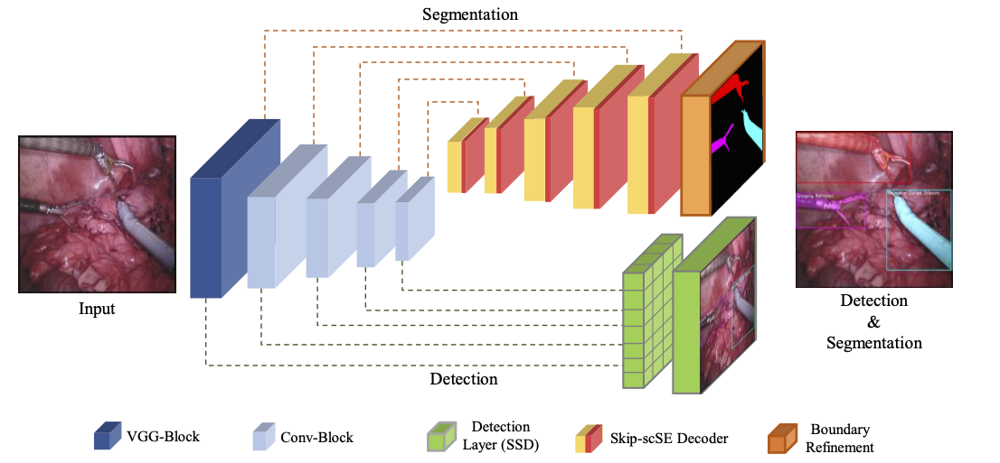 | AP-MTL: Attention Pruned Multi-task Learning Model for Real-time Instrument Detection and Segmentation in Robot-assisted Surgery. Mobarakol Islam, VS Vibashan, Hongliang Ren. IEEE International Conference on Robotics and Automation (ICRA) (ICRA), 2020. |
| 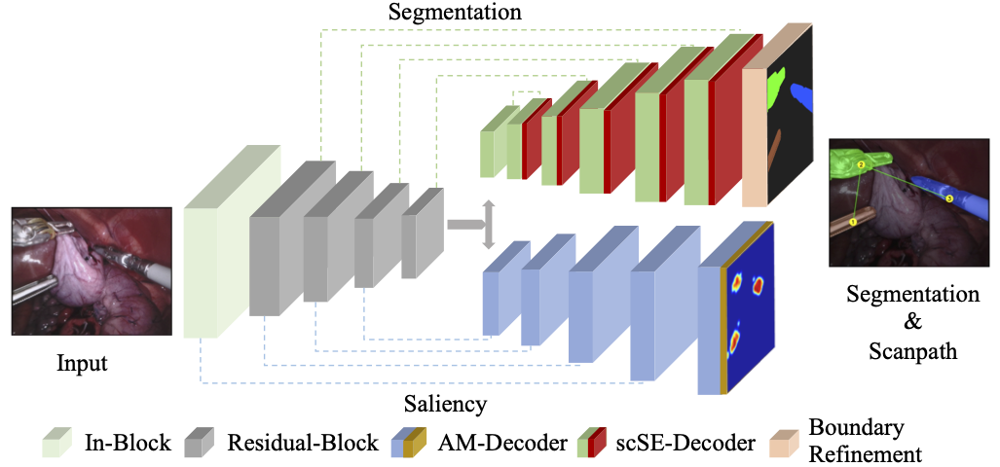 | Learning Where to Look While Tracking Instruments in Robot-Assisted Surgery. Mobarakol Islam, Yueyuan Li, Hongliang Ren. Medical Image Computing and Computer Assisted Intervention (MICCAI), 2019. |
| Real-time instrument segmentation in robotic surgery using auxiliary supervised deep adversarial learning. Mobarakol Islam, Daniel Anojan Atputharuban, Ravikiran Ramesh, Hongliang Ren. IEEE Robotics and Automation Letters (RA-L), 2019. |
|
Dataset Release
Selected Awards
Academic Services
Medical Image Computing and Computer Assisted Intervention (MICCAI'18-22)
IEEE International Conference on Robotics and Automation (ICRA'18-22)
IEEE International Conference on Intelligent Robots and Systems (IROS'21-22)
Medical Image Analysis (MedIA'20-22)
IEEE Transactions on Medical Imaging (TMI'21-22)
IEEE Robotics and Automation Letters (RA-L'18-22)
Neurocomputing(18-22)
International Journal of Computer Assisted Radiology and Surgery (IJCARS'19-22)
Medical Imaging with Deep Learning (MIDL’20-22)
Computerized Medical Imaging and Graphics (CMIG'21-22)
Teaching
| 2016-2018 | Fall | EE2024:Programming for Computer Interfaces, ECE Dept, NUS |
| 2017-2018 | Fall | BN5209: Neurosensor and Signal Processing, DME Dept, NUS |
| 2017-2018 | Spring | EE2024:Programming for Computer Interfaces, ECE Dept, NUS |
© Mobarakol Islam | Last updated: Sep 2022